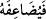

kimdir? Çünkü O, ancak helâl ve temiz olanı kabul eder.
“Allah da onun karşılığını kat kat verir.” Katlamak anlamındaki muzârî fîil nasb
olarak mânâ îtibâriyle istifhâma cevaptır. Sanki şöyle denilmiş oluyor: Biri Allah’a
borç verir mi? Allah onu katlayıversin. Yâni mükâfâtını lütfundan kat kat versin. Mânâ
itibariyle dedik, çünkü
fiilin başında bulunan fâ harfi, Ebû Ali el-Fârisî’nin de
ifâde ettiği gibi soru fiiline râcî olan fiili nasb eder. Burada ise soru, karzı ifâde eden
fiil hakkında değil, onun fâili olan ödünç verecek kişi hakkında sorulmaktadır.
“Ve ayrıca onun çok değerli bir mükâfâtı da vardır.” Yâni, kat kat verilen mükâfât
hadd-izâtında pek çok değerli, kazanmak için yarışanların gerçekten yarışmalarına değer
bir mükâfâttır. Katlanmış olmasa bile çok değerli iken, ya kat kat olunca ne kadar çok
değerlidir!
Rivâyet edildiğine göre bu âyet-i kerîme nâzil olunca, Ebu’d-Dehdâh (r.a.) adındaki
sahâbi sahib olduğu her şeyin yarısını Allah yolunda sadaka olarak vermeğe başladı.
Öyle ki, ayağındaki ayakkabıya varıncaya kadar iki malından birini muhtaç olan bir
kimseye çıkarıp verdi. Çok değerli hurma bahçesini de Allah yolunda sadaka olarak
verdi ve bahçede bulunan hanımı Ümmü Dehdâh’a gelip: Ben bu bahçeyi Rabbime
sattım demesi üzerine hanımı: Alışverişin bereketli ve kârlı olsun dedi. Bunun üzerine
Peygamberimiz (s.a.) Ebu’d-Dehdâh için “Nice hurma ağaçları var ki salkımları
cennete sarkıyor!” buyurdu.[257]
Bazı âlimler şöyle demişlerdir: Allah zenginlerden ödünç istemiştir. Şâyet onlarda
mürüvvet olsaydı, mallarını verdikten sonra fazla olarak istemeden önce kendi canlarını
verirlerdi. Çünkü kul malı ile birlikte Mevlâ’sına âiddirler. Mecâzî varlıklarını feda
edince karşılığında Allah’tan hakîkî varlıklarını bulurlar. İkram ve nimet dolu kapısının
eşiğine yönelip Allah’a doğru yürümek için gayret göstermeleri sebebiyle çok büyük
mükâfât vardır.
Ne kadar yüce gönüllü olursa insan
O kadar fayda sağlar kendi malından
Bu âyet-i kerîmede, şer’i karza/dinen isteyene istediğini borç olarak vermek
gerektiğine bir işâret vardır. Şu kudsî hadîs-i şerîfin de bunu ifâde ettiği gibi: “Ey
kulum, senden Beni doyurmanı istedim de Beni doyurmadın.”[258] buyurmuştur.
Öyleyse, Allah’ın kuluna ihtiyacı olan şeyi ödünç vermek Allah’a vermek gibidir. Borç
vermek sadakadan üstündür, daha sevaptır. Çünkü çok zaman dilenci kendisine yetecek
bir şeyi bulunduğu halde dilenir. Fakat borç isteyen ancak ihtiyacı olduğundan ister.
Âlimlerden biri bu ödünç verme, “Sübhânallâhi ve’l-hamdü lillâhi vela ilâhe
illallâhü vallâhü ekber.” Yâni Allah’ı tesbih ve noksan sıfatlardan tenzih ederim.
Bütün hamdler, övgüler O’na mahsustur. O’ndan başka ilâh yoktur. O, en büyüktür, en
yücedir, tesbihini okumak gibidir. Çünkü bu tesbih zikirlerin en üstünüdür.
Hasan Basrî’den rivâyet edildiğine göre, “Bu karz nâfile ibâdetlerdir” demiştir.